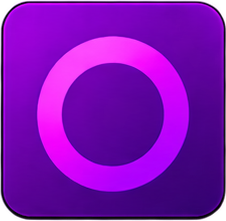
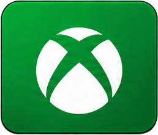
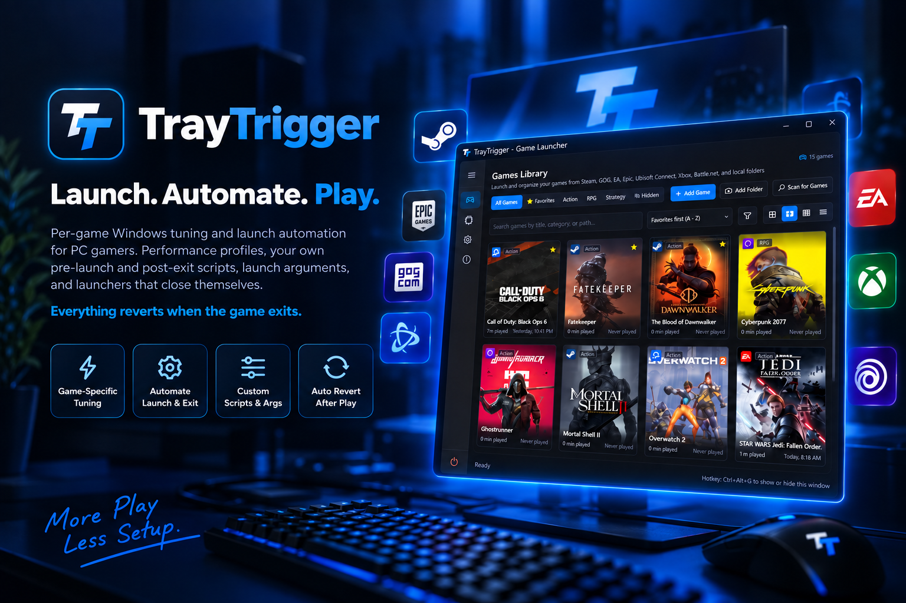
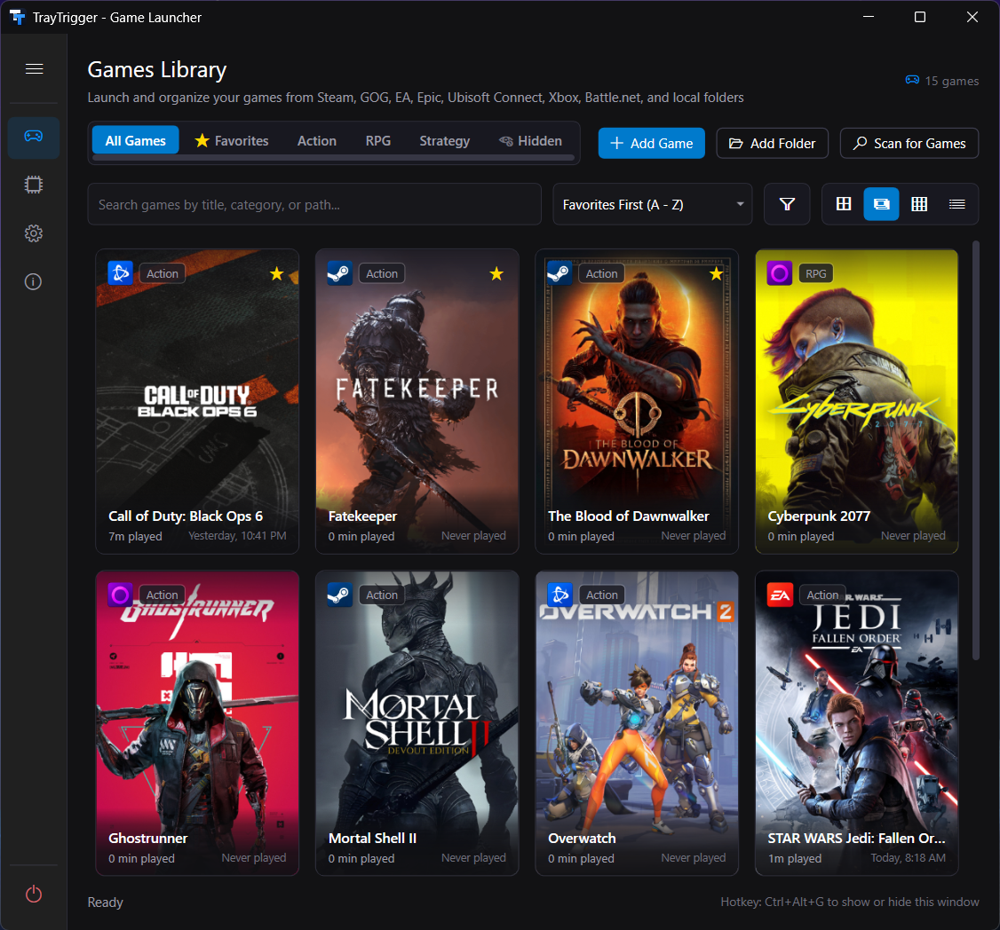
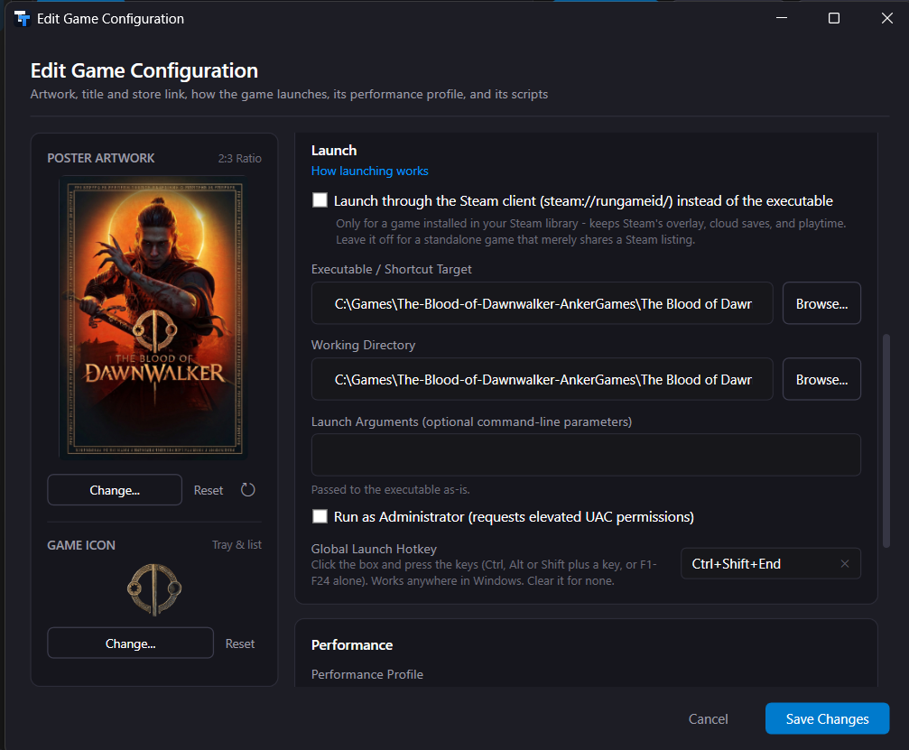
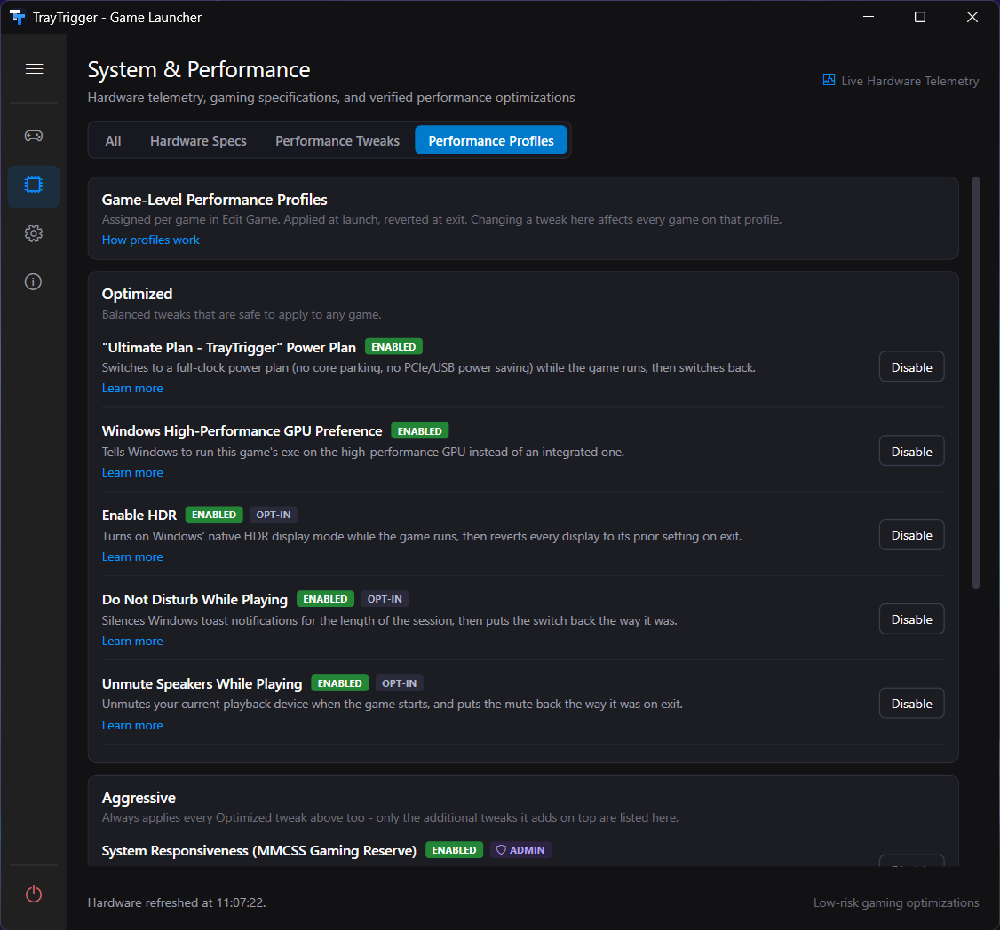
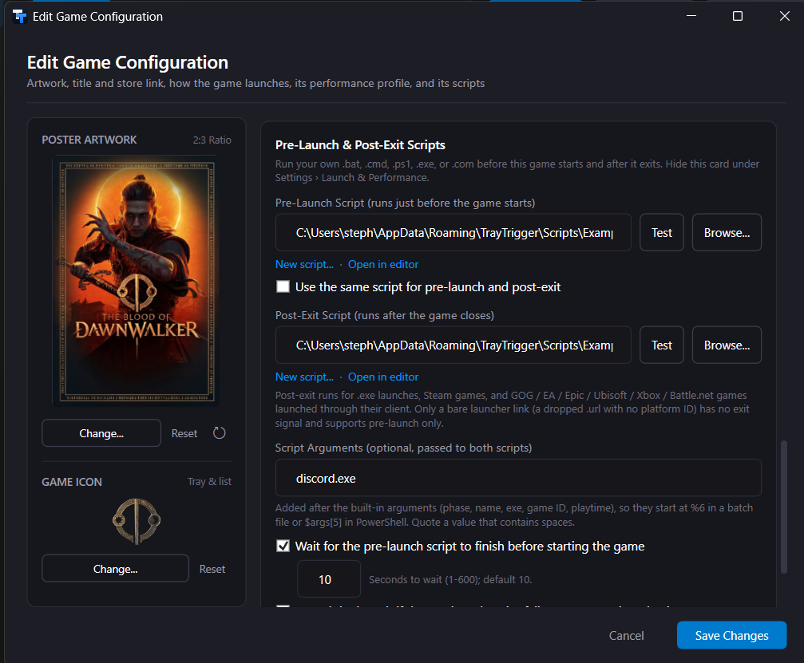
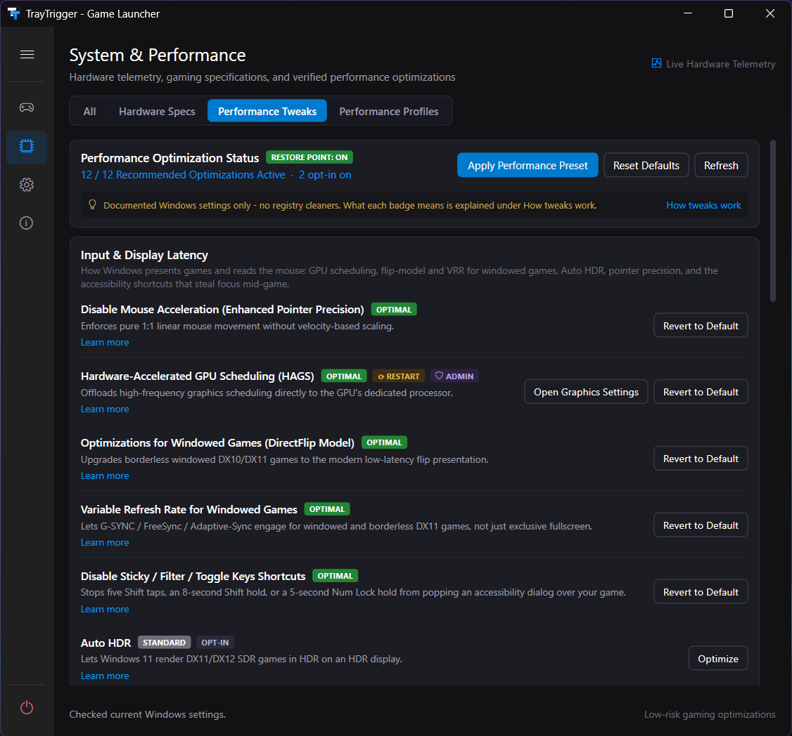

Launch automation and per-game Windows tuning for PC gamers. Launchers that close themselves, launch arguments, performance profiles, and your own pre-launch and post-exit scripts. Everything reverts when the game exits.


Scans all seven, plus anything you drop on the window. Vote on which launcher comes next.

Pick a game from the tray. TrayTrigger launches it through its own launcher, with Windows tuned for it and your scripts run first, and puts everything back the moment it exits.
Snapshots your current settings. Applies the game's Performance Profile: power plan, GPU preference, HDR, Do Not Disturb, process priority, timer resolution, CPU cores. Runs your pre-launch script.
Starts the game with your launch arguments, as Administrator if you asked, through Steam, GOG, Epic, EA, Ubisoft, Xbox, or Battle.net, or directly. Steam, GOG Galaxy and Epic start quietly in the background, so only the game appears.
Stays a tray icon. The tooltip and the menu's Now Playing section show what's running. No window to alt-tab past.
Restores every setting to exactly what it found. Runs your post-exit script. Closes the launcher if you told it to. Crash-safe: a snapshot survives a crash and is restored on next start.
A dark, Fluent-style interface: poster art, rounded cards, Segoe Fluent icons, no menu bar and no ribbon. The launcher part, so the session part has something to run.

-windowed -ResX=1280, -dx11, -skipintro, whatever the engine takes.

:: close-discord.bat (pre-launch) taskkill /IM Discord.exe /F >nul 2>&1

20 system-wide settings, separate from per-game profiles. Each one shows Windows' real current state before you touch it, and each reverts to the exact state TrayTrigger found, not a hard-coded default. Every tweak has a wiki page that explains the trade-off honestly, because most aren't a guaranteed win for every game.

Steam launches Steam games. It doesn't change your power plan for one game and put it back after, pause your wallpaper, start your replay buffer, or close itself when the game exits. TrayTrigger does that for every game from every store, and it launches Steam games through Steam. It isn't a replacement for any store or launcher; it's the layer under them.
Only what you explicitly turn on. Every tweak records the state it found and restores exactly that, including after a crash. Bulk changes can create a System Restore point first. Scripts are off until you enable them and choose one, and they run as you. See SECURITY.md for the full breakdown.
Not to run. A few tweaks write machine-wide settings and show a UAC prompt when you enable them. TrayTrigger never runs elevated by default.
No telemetry. Outbound calls are Steam's public API (metadata and artwork for games you add), SteamGridDB and RAWG (only if you enter your own key), and GitHub Releases (update checks, which you can turn off).
Yes, all of them, automatically. Per-game profiles revert on exit. System tweaks revert with Reset Defaults or one at a time. A crash mid-session is restored on next start.
Releases are built by GitHub Actions and published with a SHA-256 checksum file. Verify a download with Get-FileHash in PowerShell and compare it to SHA256SUMS.txt on the release page. See the code signing section for the current signing status.
Questions go to Discussions. Wrong art, name, or launcher goes on the scan tracking issue, one comment per game. Bugs get an issue.
Free and open source. Installer or portable ZIP. Windows 10 or 11, 64-bit. Nothing to sign up for.
Update checks are built in and can be turned off. All releases